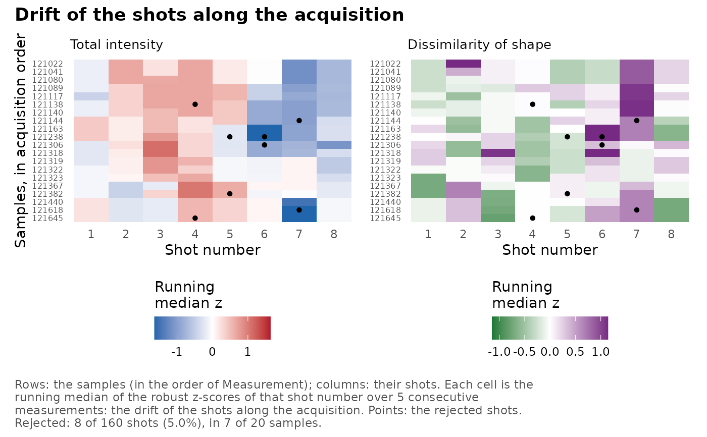
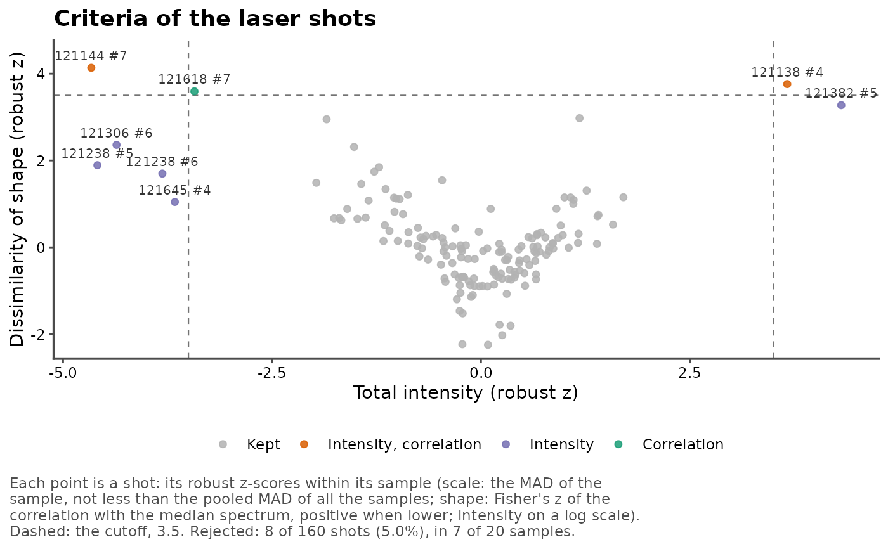
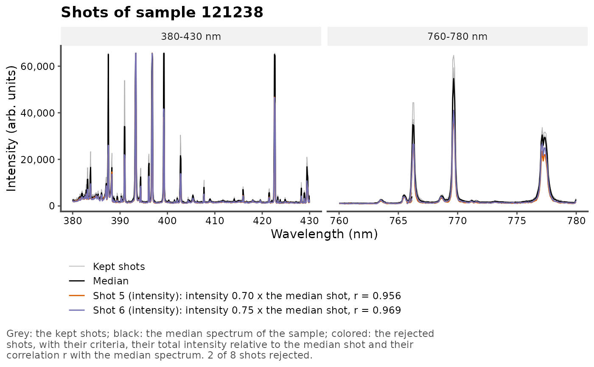
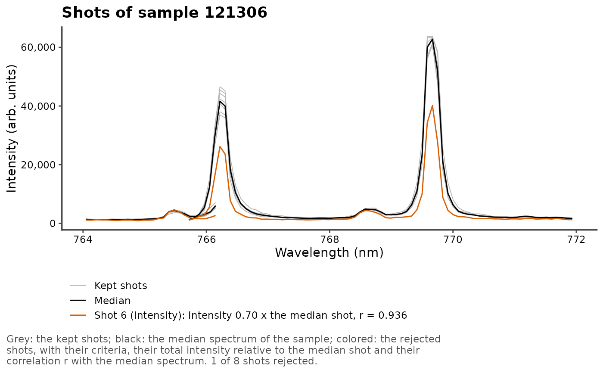
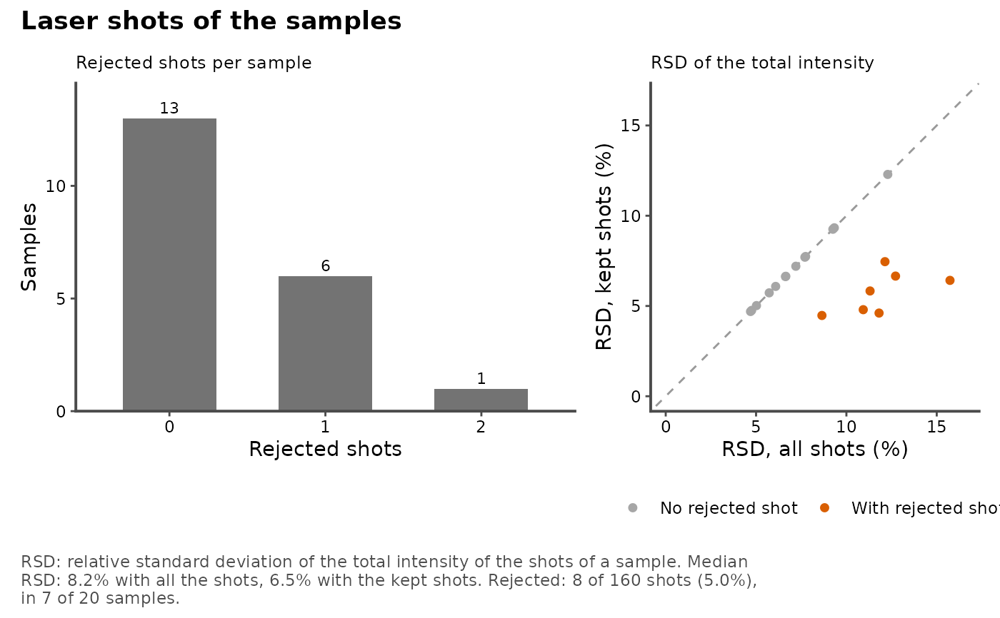

Shows the shots of a LIBS data set and the shots rejected by
reject_shots(): their criteria, their spectra, the trends along the
shots, and the samples, to judge the rejection before averaging the
shots.
Arguments
- x
The result of
reject_shots()(withdrop = FALSE).- type
The view:
"heatmap"(default),"criteria","spectra","order"or"samples"(see Details).- sample
For
type = "spectra", the sample to draw: a value of the sample column. Default is the sample with the most rejected shots.- wavelength
For
type = "spectra", an optional wavelength range (nm) to zoom on.- label
For
type = "criteria", the number of rejected shots labeled, the most extreme first. Default is 10; 0 for none.- acquisition
For
type = "heatmap", an optional column ofx(unquoted or as a string) giving the order of the measurements, such as the measurement number or the acquisition time: the rows follow it.- arrange
For
type = "heatmap"withoutacquisition, the order of the rows:"data"(default), that of the samples inx, or"extreme", the samples with the most extreme shots first.- smooth
For
type = "heatmap", an odd numberkof consecutive measurements: each cell is the running median of the z-scores of that shot number over them. Needsacquisition. Default isNULL, no smoothing.- plot
A logical: plot (
TRUE, default) or return the table of the view (the shots with their z-scores, smoothed or not, the shots of the sample, the shot numbers or the samples).- title
The plot title. A long title is split into a title and a subtitle.
- caption
TRUE(default), a caption saying how to read the plot, with the number of rejected shots;FALSE, no caption; or a caption of your own.- base_size
The size of the text, in points. Default is 11.
Details
Five views of the result of reject_shots():
"heatmap"(default): a map of the samples (rows) by the shot number (columns), one panel per criterion, colored by the robust z-score of each shot: white below 1 (the ordinary variability of the shots), then in steps up to the cutoff and beyond it, the rejected shots outlined. It shows at a glance the rejected shots, the samples whose shots vary (rows), consecutive rejected shots (a problem of focus or surface rather than a misfire), and the trends along the shot number (columns). Withacquisition, the rows follow the order of the measurements;arrange = "extreme"puts the samples with the most extreme shots first. Withsmooth = k(andacquisition), each cell is the running median of the z-scores of that shot number overkconsecutive measurements, the rejected shots as points: the drift of the shots along the acquisition (laser energy, fouling of the optics), when the trend along the shot number changes from one period to another. Without the acquisition order, neighboring rows are unrelated samples, and smoothing them would invent patterns."criteria": the robust z-scores of the shots (total intensity against the dissimilarity of shape, or the criteria used), with the cutoff: the rejected shots are colored by their criteria, and the most extreme labeled (sample and shot). Shots just beyond the cutoff are borderline; a gap between the rejected shots and the others shows clear outliers."spectra": the shots of one sample (sample, by default the sample with the most rejected shots): the kept shots in grey, the median spectrum in black, and each rejected shot in color, with its criteria, its total intensity relative to the median shot and its correlation with the median spectrum.wavelengthzooms on a range."order": along the shot number, the total intensity of the shots relative to their sample, their dissimilarity of shape to the median spectrum of their sample (\(1 - r\), on a log scale) and the share of rejected shots. A trend shows the first shots on the surface of the sample (cleaning shots) or the drift of the ablation in its crater, which the rejection, made within each sample, does not correct: discard the first shots, or check that the trend is the same for all samples."samples": the number of samples by their number of rejected shots, and the relative standard deviation (RSD) of the total intensity of the shots of each sample, with all its shots and with the kept ones: the gain of precision of the rejection, and the samples whose shots vary most (heterogeneous samples, or a poor laser focus).
The shot numbers are the .shot column of reject_shots() (its shot
argument, or the order of the rows in each sample).
Examples
data(forageShots)
res <- reject_shots(forageShots, Measurement, shot = shot)
if (rlang::is_installed("patchwork")) {
# the samples by the shot number, in the order of the measurements
plot_shots(res, acquisition = Measurement)
# the drift of the shots along the acquisition: running medians over 5
# consecutive measurements
plot_shots(res, acquisition = Measurement, smooth = 5)
}

# the criteria of the shots, the rejected ones labeled
plot_shots(res, type = "criteria")

# the shots of the sample with the most rejected shots
plot_shots(res, type = "spectra")

# a zoom on the K I lines
plot_shots(res, type = "spectra", sample = 121306, wavelength = c(764, 772))

# \donttest{
if (rlang::is_installed("patchwork")) {
# the trends along the shots, and the precision of the samples
plot_shots(res, type = "order")
plot_shots(res, type = "samples")
}

# }
# the table of the samples
plot_shots(res, type = "samples", plot = FALSE)
#> # A tibble: 20 × 5
#> Measurement n n_rejected rsd_all rsd_kept
#> <chr> <int> <int> <dbl> <dbl>
#> 1 121022 8 0 4.70 4.70
#> 2 121041 8 0 6.08 6.08
#> 3 121080 8 0 9.25 9.25
#> 4 121089 8 0 7.70 7.70
#> 5 121117 8 0 7.20 7.20
#> 6 121138 8 1 10.9 4.80
#> 7 121140 8 0 5.02 5.02
#> 8 121144 8 1 11.3 5.83
#> 9 121163 8 0 12.3 12.3
#> 10 121238 8 2 15.7 6.42
#> 11 121306 8 1 12.7 6.66
#> 12 121318 8 0 4.76 4.76
#> 13 121319 8 0 6.63 6.63
#> 14 121322 8 0 5.73 5.73
#> 15 121323 8 0 7.74 7.74
#> 16 121367 8 0 9.33 9.33
#> 17 121382 8 1 11.8 4.61
#> 18 121440 8 0 6.65 6.65
#> 19 121618 8 1 8.65 4.47
#> 20 121645 8 1 12.1 7.46